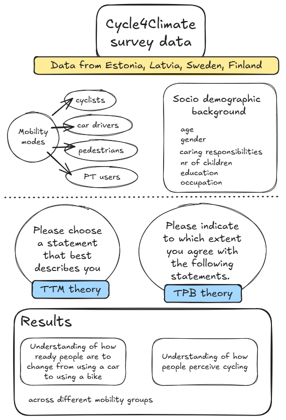
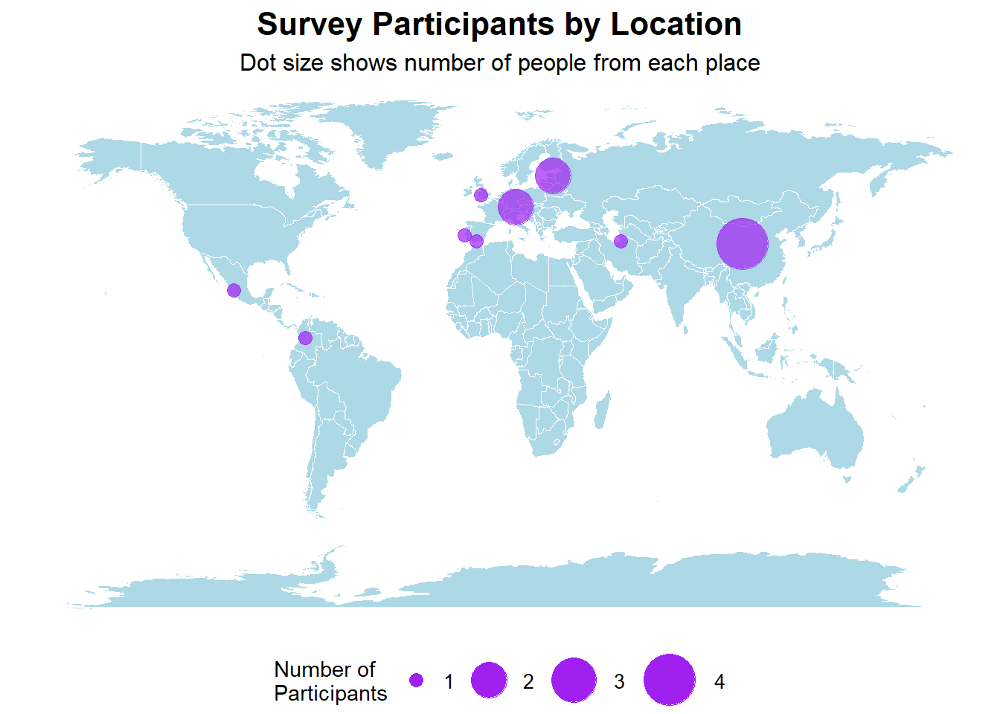

download.file(
url = "https://raw.githubusercontent.com/elisejalonen/eitcourse/main/people.csv",
destfile = "people.csv")Survey on favourite pets
The description of the data used in the study
The survey used data collected in spring 2025 from four cities in four countries
Here we can see a mind map on a totally different topic. See the mind map in Figure 1

Download the file
Check what the data looks like
library(ggplot2)Warning: package 'ggplot2' was built under R version 4.3.3library(dplyr)Warning: package 'dplyr' was built under R version 4.3.3
Attaching package: 'dplyr'The following objects are masked from 'package:stats':
filter, lagThe following objects are masked from 'package:base':
intersect, setdiff, setequal, union#install.packages("maps")
library(maps)
#install.packages("countrycode")
library(countrycode)Warning: package 'countrycode' was built under R version 4.3.3people <- read.csv("people.csv")
head(people) name username from animal
1 robin robinlovelace Hereford UK Red kite
2 juan juanfonsecals1 Bogota Colombia Cat
3 Jun populusjade China Meerkat
4 tbc tbcusername tbc animal
5 keke keke germany orca
6 newsha Nmodjrian Gorgan Iran foxRemove all data that isn’t right
people_unique <- people %>% distinct()
nrow(people_unique)[1] 22str(people_unique)'data.frame': 22 obs. of 4 variables:
$ name : chr "robin" "juan" "Jun" "tbc" ...
$ username: chr "robinlovelace" "juanfonsecals1" "populusjade" "tbcusername" ...
$ from : chr "Hereford UK" "Bogota Colombia" "China" "tbc" ...
$ animal : chr "Red kite" "Cat" "Meerkat" "animal" ...Check which animals are the most popular
people_unique %>% count(animal, sort = TRUE) animal n
1 dog 3
2 Cat 2
3 Dog 2
4 1
5 Iran 1
6 penguin 1
7 Cormorants 1
8 Donkey 1
9 Meerkat 1
10 Mexican Opossum (tlacuache) 1
11 Panda 1
12 Penguim 1
13 Red kite 1
14 animal 1
15 fox 1
16 orca 1
17 otter 1
18 ttyrannosaurus rex 1Check which countries are people from
people_unique %>% count(from, sort = TRUE) from n
1 China 4
2 Munich Germany 2
3 Tartu Estonia 2
4 1
5 Bogota Colombia 1
6 Gorgan Iran 1
7 Guadalajara Mexico 1
8 Hereford UK 1
9 Lisbon Portugal 1
10 Malaga 1
11 Nanjing China 1
12 Prague Czechia 1
13 TUM 1
14 Tehran 1
15 barcelona 1
16 germany 1
17 tbc 1world_map <- map_data("world")
location_coords <- data.frame(
from = c("China", "Munich Germany", "Tartu Estonia", "Bogota Colombia",
"Gorgan Iran", "Guadalajara Mexico", "Hereford UK",
"Lisbon Portugal", "Malaga"),
lat = c(35.8617, 48.1351, 58.3806, 4.7110,
36.8433, 20.6597, 52.0567,
38.7223, 36.7213),
long = c(104.1954, 11.5820, 26.7291, -74.0721,
54.4431, -103.3496, -2.7158,
-9.1393, -4.4214)
)
# Count people by location and join with coordinates
people_with_coords <- people %>%
count(from, name = "participants") %>%
left_join(location_coords, by = "from") %>%
filter(!is.na(lat)) # Keep only locations with coordinates
# Create map with sized dots
ggplot() +
geom_polygon(data = world_map,
aes(x = long, y = lat, group = group),
fill = "lightblue", color = "white", size = 0.1) +
geom_point(data = people_with_coords,
aes(x = long, y = lat, size = participants),
color = "purple", alpha = 0.7) +
scale_size_continuous(range = c(3, 12),
name = "Number of\nParticipants",
breaks = c(1, 2, 3, 4),
guide = guide_legend(override.aes = list(alpha = 1))) +
theme_void() +
labs(title = "Survey Participants by Location",
subtitle = "Dot size shows number of people from each place") +
theme(
plot.title = element_text(hjust = 0.5, size = 16, face = "bold"),
plot.subtitle = element_text(hjust = 0.5, size = 12),
legend.position = "bottom",
legend.title = element_text(size = 11),
legend.text = element_text(size = 10)
)Warning: Using `size` aesthetic for lines was deprecated in ggplot2 3.4.0.
ℹ Please use `linewidth` instead.